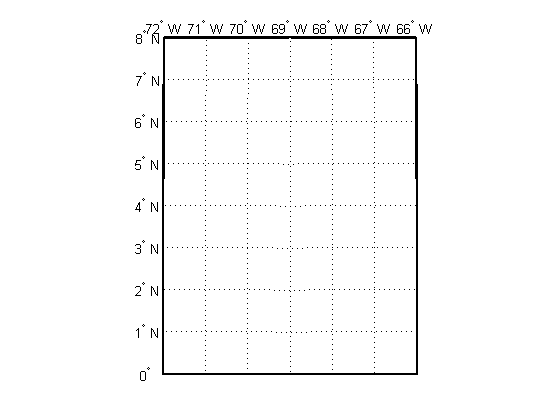
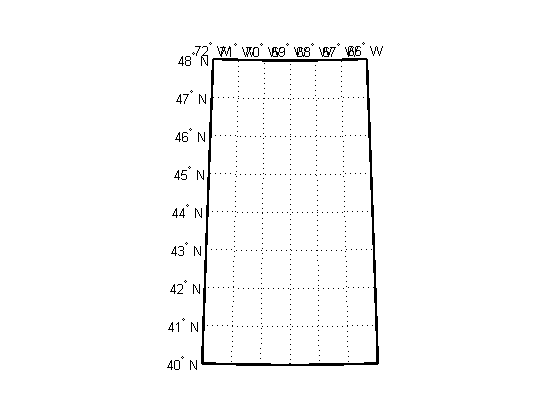
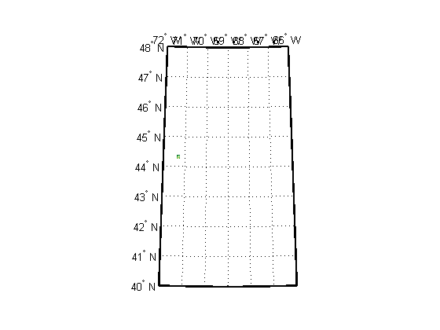
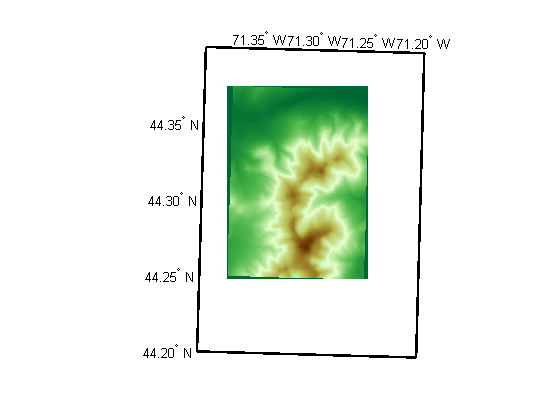
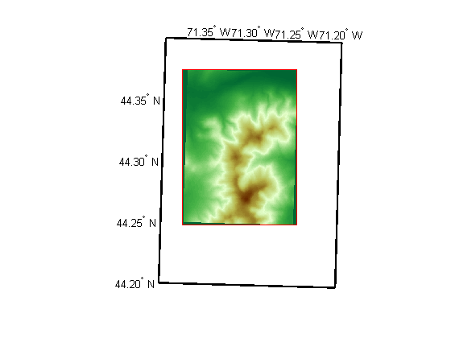
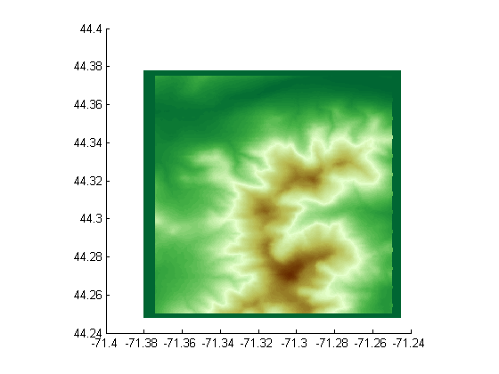
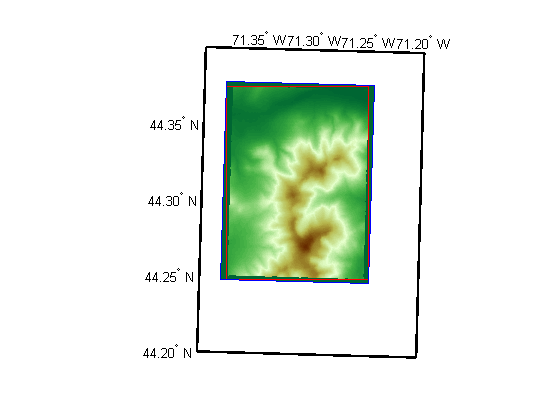

Un-Projecting a Digital Elevation Model (DEM)
U.S. Geological Survey (USGS) 30-meter Digital Elevation Models (DEMs) are regular grids (raster data) that use the UTM coordinate system. Using such DEMs in applications may require reprojecting and resampling them. The following example shows how to convert a USGS DEM into a regular latitude-longitude grid having comparable spatial resolution. The approach it demonstrates can readily be applied to projected map coordinate systems other than UTM and to other DEMs and most types of regular data grids.
Contents
- Step 1: Import the DEM and its Metadata
- Step 2: Assign a Reference Ellipsoid Vector
- Step 3: Determine which UTM Zone to Use and Construct a Map Axes
- Step 4: Display the Original DEM on the Map Axes
- Step 5: Define the Output Latitude-Longitude Grid
- Step 6: Map Each Output Grid Point Location to UTM X-Y
- Step 7: Resample the Original DEM
- Credits
Step 1: Import the DEM and its Metadata
This example uses a USGS DEM for a quadrangle 7.5-arc-minutes square located in the White Mountains of New Hampshire, USA. The data set is stored in the Spatial Data Transfer Standard (STDS) format and is located in the directory
fullfile(matlabroot,'toolbox','map','mapdemos');
This directory is on the MATLAB® path if the Mapping Toolbox™ is installed, so it suffices to refer to the data set by filename alone.
stdsfilename = '9129CATD.ddf';
You can use the sdtsinfo command to obtain basic metadata about the DEM.
info = sdtsinfo(stdsfilename)
info =
Filename: '9129CATD.DDF'
Title: 'MOUNT WASHINGTON, NH - 24000'
ProfileID: 'SDTS RASTER PROFILE'
ProfileVersion: 'DRAFT VERSION JULY 1997'
MapDate: ''
DataCreationDate: '19980811'
HorizontalDatum: 'North American 1927'
MapRefSystem: 'UTM'
ZoneNumber: 19
XResolution: 30
YResolution: 30
NumberOfRows: 472
NumberOfCols: 345
HorizontalUnits: 'METERS'
VerticalUnits: 'METERS'
MinElevation: 367
MaxElevation: 1909
and you can use sdtsdemread to import the DEM into a 2-D MATLAB array (Z), along with its referencing matrix (R).
[Z,R] = sdtsdemread(stdsfilename); R
R =
1.0e+006 *
0 -0.0000
0.0000 0
0.3104 4.9161
is a 3-by-2 matrix that maps the row and column subscripts of Z to map x and y (UTM "eastings" and "northings" in this case) such that
[x y] = [row col 1] * R.
See functions pix2map and map2pix.
Step 2: Assign a Reference Ellipsoid Vector
The value of
info.HorizontalDatum
ans = North American 1927
indicates use of the North American Datum of 1927. The Clarke 1866 ellipsoid is the standard reference ellipsoid for this datum.
ellipsoidName = 'clarke66';
You can also check the value of the HorizontalUnits field,
mapUnits = info.HorizontalUnits;
which indicates that the horizontal coordinates of the DEM are in units of meters, and provide both pieces of information to the almanac function.
clarke66 = almanac('earth', ellipsoidName, mapUnits)
clarke66 =
1.0e+006 *
6.3782 0.0000
Step 3: Determine which UTM Zone to Use and Construct a Map Axes
From the MapRefSystem field in the SDTS info struct,
info.MapRefSystem
ans = UTM
you can tell that the DEM is gridded in a Universal Transverse Mercator (UTM) coordinate system.
The 'ZoneNumber' field
info.ZoneNumber
ans =
19
indicates which longitudinal UTM zone was used. The Mapping Toolbox utm function, however, also requires a latitudinal zone; this is not provided in the metadata, but you can derive it from the referencing matrix and grid dimensions.
UTM comprises 60 longitudinal zones each spanning 6 degrees of longitude and 20 latitudinal zones ranging from 80 degrees South to 84 degrees North. Longitudinal zones are designated by numbers ranging from 1 to 60. Latitudinal zones are designated by letters ranging from C to X (omitting I and O). In a given hemisphere (Southern or Northern), all the latitudinal zones occupy a shared coordinate system. Aside from determining the hemisphere, the toolbox merely uses latitudinal zone to help set the default map limits.
So, you can start by using the first latitudinal zone in the Northern Hemisphere, zone N (for latitudes between zero and 8 degrees North) as a provisional zone.
longitudinalZone = sprintf('%d',info.ZoneNumber); provisionalLatitudinalZone = 'N'; provisionalZone = [longitudinalZone provisionalLatitudinalZone]
provisionalZone = 19N
Then, construct a UTM axes based on this provisional zone
figure('Color','white') ax = axesm('mapprojection', 'utm', ... 'zone', provisionalZone, 'geoid', clarke66); axis off; gridm; mlabel on; plabel on; framem on
To find the actual zone, you can locate the center of the DEM in UTM coordinates,
[xCenter, yCenter] = pix2map(R, ...
(1 + size(Z,1))/2, (1 + size(Z,2))/2)
xCenter = 3.1556e+005 yCenter = 4.9090e+006
then convert latitude-longitude, taking advantage of the fact that xCenter and yCenter will be the same in zone 19N as they are into the actual zone.
[latCenter, lonCenter] = minvtran(xCenter, yCenter)
latCenter = 44.3125 lonCenter = -71.3126
Then, with the utmzone function, you can use the latitude-longitude coordinates to determine the actual UTM zone for the DEM.
actualZone = utmzone(latCenter, lonCenter)
actualZone = 19T
Finally, use the result to reset the zone of the axes constructed earlier.
setm(ax, 'zone', actualZone)
 Note: if you can visually place the approximately location of New Hampshire on a world map, then you can confirm this result with the utmzoneui GUI.
utmzoneui(actualZone)
Step 4: Display the Original DEM on the Map Axes
Use mapshow (rather than geoshow or meshm) to display the DEM on the map axes because the data are gridded in map (x-y) coordinates.
mapshow(Z, R, 'DisplayType', 'texturemap') demcmap(Z)
The DEM covers such a small part of this map that it may be hard to see (look between 44 and 44 degrees North and 72 and 71 degrees West), because the map limits are set to cover the entire UTM zone. You can reset them (as well as the map grid and label parameters) to get a closer look.
setm(ax, 'MapLatLimit', [44.2 44.4], 'MapLonLimit', [-71.4 -71.2]) setm(ax, 'MLabelLocation', 0.05, 'MLabelRound', -2) setm(ax, 'PLabelLocation', 0.05, 'PLabelRound', -2) setm(ax, 'PLineLocation', 0.025, 'MLineLocation', 0.025)
When it is viewed at this larger scale, narrow wedge-shaped areas of uniform color appear along the edge of the grid. These are places where Z contains the value NaN, which indicates the absence of actual data. By default they receive the first color in the color table, which in this case is dark green. These null-data areas arise because although the DEM is gridded in UTM coordinates, its data limits are defined by a latitude-longitude quadrangle. The narrow angle of each wedge corresponds to the non-zero "grid declination" of the UTM coordinate system in this part of the zone. (Lines of constant x run precisely north-south only along the central meridian of the zone. Elsewhere, they follow a slight angle relative to the local meridians.)
Step 5: Define the Output Latitude-Longitude Grid
The next step is to define a regularly-spaced set of grid points in latitude-longitude that covers the area within the DEM at about the same spatial resolution as the original data set.
First, you need to determine how the latitude changes between rows in the input DEM (i.e., by moving northward by 30 meters).
az = 0; rng = info.YResolution; % In meters, consistent with clarke66 [latNorth lonNorth] = reckon(latCenter, lonCenter, rng, az, clarke66) dLat = latNorth - latCenter % In degrees
latNorth = 44.3128 lonNorth = -71.3126 dLat = 2.6998e-004
The actual spacing can be rounded slightly to define the grid spacing to be used for the output (latitude-longitude) grid.
gridSpacing = 2.5e-4; % In Degrees
To set the extent of the output (latitude-longitude) grid, start by finding the corners of the DEM in UTM map coordinates.
bbox = mapbbox(R, size(Z)) xCorners = bbox([1 1 2 2],1) yCorners = bbox([1 2 2 1],2)
bbox =
1.0e+006 *
0.3104 4.9019
0.3207 4.9161
xCorners =
1.0e+005 *
3.1038
3.1038
3.2073
3.2073
yCorners =
1.0e+006 *
4.9019
4.9161
4.9161
4.9019
Then convert the corners to latitude-longitude. Display the latitude-longitude corners on the map (via the UTM projection) to check that the results are reasonable.
[latCorners, lonCorners] = minvtran(xCorners, yCorners) geoshow(latCorners, lonCorners, 'DisplayType', 'polygon',... 'FaceColor', 'none', 'EdgeColor', 'red')
latCorners = 44.2475 44.3749 44.3775 44.2501 lonCorners = -71.3749 -71.3800 -71.2502 -71.2454
Next, round outward to define an output latitude-longitude bounding box that fully encloses the DEM and aligns with multiples of the grid spacing.
latMin = gridSpacing * floor(min(latCorners)/gridSpacing) lonMin = gridSpacing * floor(min(lonCorners)/gridSpacing) latMax = gridSpacing * ceil( max(latCorners)/gridSpacing); lonMax = gridSpacing * ceil( max(lonCorners)/gridSpacing); nRows = ceil((latMax - latMin)/gridSpacing) nCols = ceil((lonMax - lonMin)/gridSpacing) latMax = latMin + nRows * gridSpacing lonMax = lonMin + nCols * gridSpacing geoshow([latMin, latMax, latMax, latMin],... [lonMin, lonMin, lonMax, lonMax],... 'DisplayType', 'polygon',... 'FaceColor', 'none', 'EdgeColor', 'blue')
latMin = 44.2475 lonMin = -71.3803 nRows = 521 nCols = 541 latMax = 44.3777 lonMax = -71.2450
Finally, construct a referencing matrix for the output grid. It supports transformations between latitude-longitude and the row and column subscripts.
Rlatlon = makerefmat('RasterSize', [nRows nCols], ... 'Latlim', [latMin latMax], 'Lonlim', [lonMin lonMax])
Rlatlon =
0 0.0002
0.0002 0
-71.3804 44.2474
Rlatlon, nRows, and nCols fully define the number and location of each sample point in the output grid.
Step 6: Map Each Output Grid Point Location to UTM X-Y
Finally, you're ready to make use of the map projection, applying it to the location of each point in the output grid. First compute the latitudes and longitudes of those points, stored in 2-D arrays.
[lon, lat] = pixcenters(Rlatlon, nRows, nCols, 'makegrid');
Then apply the projection to each latitude-longitude pair, arrays of UTM x-y locations having the same shape and size as the latitude-longitude arrays.
[XI, YI] = mfwdtran(lat, lon);
At this point, XI(i,j) and YI(i,j) specify the UTM coordinate of the grid point corresponding to the i-th row and j-th column of the output grid.
Step 7: Resample the Original DEM
The final step is to use use the MATLAB interp2 function to perform bilinear resampling.
At this stage, the value of projecting from the latitude-longitude grid into the UTM map coordinate system becomes evident: it means that the resampling can take place in the regular X-Y grid, making interp2 applicable. The reverse approach, un-projecting each (X,Y) point into latitude-longitude, might seem more intuitive but it would result in an irregular array of points to be interpolated -- a much harder task, requiring use of the far more costly griddata function or some rough equivalent.
[X,Y] = pixcenters(R, size(Z), 'makegrid'); method = 'bilinear'; extrapval = NaN; Zlatlon = interp2(X, Y, Z, XI, YI, method, extrapval);
View the resampled DEM in an un-projected axes, with latitude as Y and longitude as X, noting the NaN-filled areas along the edges.
figure mapshow(Zlatlon, Rlatlon, 'DisplayType', 'texturemap') demcmap(Z)
View the result in the projected axes using geoshow, which will re-project it on the fly. Notice that it fills the blue rectangle, which is aligned with lines of latitude and longitude. (In contrast, the red rectangle, which outlines the original DEM, aligns with UTM x and y.) Also notice NaN-filled regions along the edges of the grid. The boundaries of these regions appear slightly jagged, at the level of a single grid spacing, due to round-off effects during interpolation.
figure(get(ax,'Parent')) geoshow(Zlatlon, Rlatlon, 'DisplayType', 'texturemap')
Credits
9129CATD.ddf (and supporting files):
United States Geological Survey (USGS) 7.5-minute Digital Elevation Model (DEM) in Spatial Data Transfer Standard (SDTS) format for the Mt. Washington quadrangle, with elevation in meters. http://edc.usgs.gov/products/elevation/dem.html
For more information, run:
>> type 9129.txt